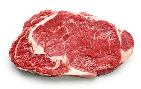

Steak or Break

There's nothin' a workin' man wants more than some steak and potatoes after a hard day's work. I ain't got no taters for ya, but I do have the chuckeye steak recipe of a lifetime. It only takes 4 ingredients and an oven. Tasty enough to tame your temper, simple enough to settle your soul.
Ingredients
- 1lb ribeye
- 1 tsp garlic powder
- 1/2 tsp pepper
- 1tsp salt
Instructions
- Set oven to broil. Let it heat up for 15 minutes.
- Put steak on baking trey and coat both sides evenly with garlic powder, pepper, and salt.
- Once oven is heated up, put steak trey inside on a rack. The rack should be about 6 inches from broiler.
- Broil for 5 minutes on one side, then flip. Broil for another 5 minutes on the opposite side.
- Take steak out of the oven. Cover for 5 minutes and let rest. Serve.